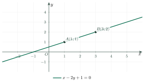

Equations of a LinePhương trình đường thẳng
Grade 10 · Topic: Coordinate Geometry in the PlaneLớp 10 · Chủ đề: Phương pháp tọa độ trong mặt phẳng
1Lesson IntroductionGiới thiệu bài học
Learning goalsMục tiêu bài học
By the end of this lesson you can:
Sau bài học này, em có thể:
recognise direction vectors, normal vectors and the forms of the equation of a line;
nhận biết vectơ chỉ phương, vectơ pháp tuyến của đường thẳng và các dạng phương trình đường thẳng;
write parametric and general equations from given data (a point and a vector, two points, a slope);
viết phương trình tham số và phương trình tổng quát của đường thẳng khi biết một điểm và một vectơ, hai điểm, hệ số góc;
solve coordinate problems on lines in a triangle (altitudes, medians);
giải bài toán tọa độ về đường cao, đường trung tuyến trong tam giác;
model linear relations in real life with a line.
mô hình hóa quan hệ bậc nhất trong thực tế bằng đường thẳng.
2Mathematical VocabularyTừ vựng Toán học
general equation of a line – \(ax+by+c=0\) with \(a^2+b^2\ne0\); \(\vec n=(a;b)\) is a normal vector.
phương trình tổng quát của đường thẳng – \(ax+by+c=0\) với \(a^2+b^2\ne0\); \(\vec n=(a;b)\) là một vectơ pháp tuyến.
normal vector of a line – a non-zero vector perpendicular to the direction of the line.
vectơ pháp tuyến của đường thẳng – vectơ khác \(\vec0\) có giá vuông góc với đường thẳng.
slope–intercept form – \(y=kx+m\); \(k\) is the slope.
phương trình theo hệ số góc – \(y=kx+m\); \(k\) là hệ số góc.
3Useful English PhrasesCụm từ tiếng Anh thường gặp
The line passes through \(A\) and has normal vector \(\vec n\).
Đường thẳng đi qua \(A\) và có vectơ pháp tuyến \(\vec n\).
A direction vector is perpendicular to a normal vector.
Vectơ chỉ phương vuông góc với vectơ pháp tuyến.
Substitute the coordinates of the point.
Thay tọa độ của điểm vào phương trình.
The slope of the line is two.
Hệ số góc của đường thẳng bằng 2.
Write the general equation.
Viết phương trình tổng quát.
4Prerequisite ReviewÔn tập kiến thức nền
From Bài 10–11: coordinates of a vector \(\overrightarrow{AB}=(x_B-x_A;y_B-y_A)\); \(\vec u\perp\vec v\iff\vec u\cdot\vec v=0\). From Grade 9: the graph of \(y=ax+b\) is a line with slope \(a\).
Từ Bài 10–11: tọa độ vectơ \(\overrightarrow{AB}=(x_B-x_A;y_B-y_A)\); \(\vec u\perp\vec v\iff\vec u\cdot\vec v=0\). Từ lớp 9: đồ thị \(y=ax+b\) là đường thẳng có hệ số góc \(a\).
5TheoryLý thuyết
5.1 Direction vector and parametric equationsVectơ chỉ phương và phương trình tham số
DefinitionsĐịnh nghĩa
\(\vec u\ne\vec0\) is a direction vector of \(\Delta\) if it is parallel to (or lies on) \(\Delta\).
\(\vec u\ne\vec0\) là vectơ chỉ phương của \(\Delta\) nếu giá của nó song song hoặc trùng với \(\Delta\).
Through \(M_0(x_0;y_0)\) with \(\vec u=(a;b)\): \(\begin{cases}x=x_0+at\\y=y_0+bt\end{cases}\) (\(t\in\mathbb R\)). Each \(t\) gives one point of \(\Delta\).
Qua \(M_0(x_0;y_0)\), có \(\vec u=(a;b)\): \(\begin{cases}x=x_0+at\\y=y_0+bt\end{cases}\) (\(t\in\mathbb R\)). Mỗi \(t\) cho một điểm của \(\Delta\).
5.2 Normal vector and general equationVectơ pháp tuyến và phương trình tổng quát
DefinitionsĐịnh nghĩa
\(\vec n\ne\vec0\) is a normal vector of \(\Delta\) if it is perpendicular to a direction vector. If \(\vec u=(a;b)\) then \(\vec n=(b;-a)\) (and conversely).
\(\vec n\ne\vec0\) là vectơ pháp tuyến của \(\Delta\) nếu nó vuông góc với vectơ chỉ phương. Nếu \(\vec u=(a;b)\) thì \(\vec n=(b;-a)\) (và ngược lại).
Through \(M_0(x_0;y_0)\) with \(\vec n=(a;b)\): \(a(x-x_0)+b(y-y_0)=0\), i.e. \(ax+by+c=0\) with \(c=-ax_0-by_0\).
Qua \(M_0(x_0;y_0)\), có \(\vec n=(a;b)\): \(a(x-x_0)+b(y-y_0)=0\), tức \(ax+by+c=0\) với \(c=-ax_0-by_0\).
Conversely, every equation \(ax+by+c=0\) (\(a^2+b^2\ne0\)) is a line with \(\vec n=(a;b)\), \(\vec u=(b;-a)\).
Ngược lại, mọi phương trình \(ax+by+c=0\) (\(a^2+b^2\ne0\)) là một đường thẳng có \(\vec n=(a;b)\), \(\vec u=(b;-a)\).
Special casesCác trường hợp đặc biệt
Through \(A(a;0)\), \(B(0;b)\) (\(ab\ne0\)): \(\dfrac xa+\dfrac yb=1\) (intercept form).
Qua \(A(a;0)\), \(B(0;b)\) (\(ab\ne0\)): \(\dfrac xa+\dfrac yb=1\) (phương trình đoạn chắn).
If \(b\ne0\): \(ax+by+c=0\iff y=kx+m\) with slope \(k=-\dfrac ab\). Through \(A\), \(B\) with \(x_A\ne x_B\): \(k=\dfrac{y_B-y_A}{x_B-x_A}\).
Nếu \(b\ne0\): \(ax+by+c=0\iff y=kx+m\) với hệ số góc \(k=-\dfrac ab\). Qua \(A\), \(B\) với \(x_A\ne x_B\): \(k=\dfrac{y_B-y_A}{x_B-x_A}\).
\(a=0\): \(y=-\dfrac cb\) (parallel to \(Ox\)); \(b=0\): \(x=-\dfrac ca\) (parallel to \(Oy\)).
\(a=0\): \(y=-\dfrac cb\) (song song với \(Ox\)); \(b=0\): \(x=-\dfrac ca\) (song song với \(Oy\)).

Watch out!Lưu ý
From \(ax+by+c=0\): \(\vec n=(a;b)\) but \(\vec u=(b;-a)\) – do not mix them up. A line has many equations: multiplying by \(k\ne0\) gives the same line.
Từ \(ax+by+c=0\): \(\vec n=(a;b)\) còn \(\vec u=(b;-a)\) – đừng nhầm. Một đường thẳng có nhiều phương trình: nhân hai vế với \(k\ne0\) vẫn được cùng đường thẳng.
6Worked ExamplesVí dụ có lời giải
ExampleVí dụ 1BasicCơ bản – Reading a general equationĐọc phương trình tổng quát
For \(\Delta: 2x-3y+6=0\), give a normal vector, a direction vector and two points of \(\Delta\).
Cho \(\Delta: 2x-3y+6=0\). Chỉ ra một vectơ pháp tuyến, một vectơ chỉ phương và hai điểm thuộc \(\Delta\).
Analysis: \(\vec n=(a;b)\), \(\vec u=(b;-a)\); points: put \(x=0\), then \(y=0\).
Phân tích: \(\vec n=(a;b)\), \(\vec u=(b;-a)\); tìm điểm: cho \(x=0\), rồi \(y=0\).
\(\vec n=(2;-3)\), \(\vec u=(3;2)\) (check \(\vec n\cdot\vec u=6-6=0\)).
\(\vec n=(2;-3)\), \(\vec u=(3;2)\) (kiểm tra \(\vec n\cdot\vec u=6-6=0\)).
\(x=0\Rightarrow y=2\); \(y=0\Rightarrow x=-3\).
\(x=0\Rightarrow y=2\); \(y=0\Rightarrow x=-3\).
\(\vec n=(2;-3)\), \(\vec u=(3;2)\), points \((0;2)\), \((-3;0)\).
\(\vec n=(2;-3)\), \(\vec u=(3;2)\), điểm \((0;2)\), \((-3;0)\).
ExampleVí dụ 2BasicCơ bản – Parametric equationsPhương trình tham số
Write parametric equations of the line \(d\) through \(A(1;-2)\) with direction vector \(\vec u=(3;4)\). Does \(M(7;6)\) lie on \(d\)?
Viết phương trình tham số của đường thẳng \(d\) qua \(A(1;-2)\), có vectơ chỉ phương \(\vec u=(3;4)\). Điểm \(M(7;6)\) có thuộc \(d\) không?
Analysis: Find one \(t\) for both coordinates.
Phân tích: Tìm một giá trị \(t\) chung cho cả hai tọa độ.
\(d: \begin{cases}x=1+3t\\y=-2+4t\end{cases}\).
\(d: \begin{cases}x=1+3t\\y=-2+4t\end{cases}\).
\(7=1+3t\Rightarrow t=2\); \(y=-2+8=6\) ✓.
\(7=1+3t\Rightarrow t=2\); \(y=-2+8=6\) ✓.
\(M\in d\) (with \(t=2\)).
\(M\in d\) (ứng với \(t=2\)).
ExampleVí dụ 3IntermediateTrung bình – General equationsViết phương trình tổng quát
a) The line through \(M(2;1)\) with normal vector \(\vec n=(3;-1)\).
b) The line through \(A(1;2)\) and \(B(4;-1)\).
Viết phương trình tổng quát của:
a) đường thẳng qua \(M(2;1)\), có vectơ pháp tuyến \(\vec n=(3;-1)\);
b) đường thẳng qua \(A(1;2)\) và \(B(4;-1)\).
Analysis: \(a(x-x_0)+b(y-y_0)=0\); for b), \(\vec n\perp\overrightarrow{AB}\).
Phân tích: \(a(x-x_0)+b(y-y_0)=0\); câu b), \(\vec n\perp\overrightarrow{AB}\).
a) \(3(x-2)-(y-1)=0\iff3x-y-5=0\).
a) \(3(x-2)-(y-1)=0\iff3x-y-5=0\).
b) \(\overrightarrow{AB}=(3;-3)\), take \(\vec u=(1;-1)\), \(\vec n=(1;1)\): \((x-1)+(y-2)=0\iff x+y-3=0\).
b) \(\overrightarrow{AB}=(3;-3)\), chọn \(\vec u=(1;-1)\), \(\vec n=(1;1)\): \((x-1)+(y-2)=0\iff x+y-3=0\).
a) \(3x-y-5=0\);
b) \(x+y-3=0\).
a) \(3x-y-5=0\);
b) \(x+y-3=0\).
ExampleVí dụ 4IntermediateTrung bình – Altitude and medianĐường cao và đường trung tuyến
Triangle \(ABC\): \(A(1;4)\), \(B(-1;0)\), \(C(3;2)\). Write the equations of the altitude \(AH\) and the median \(AM\).
Cho tam giác \(ABC\) với \(A(1;4)\), \(B(-1;0)\), \(C(3;2)\). Viết phương trình đường cao \(AH\) và đường trung tuyến \(AM\).
Analysis: The altitude has normal vector \(\overrightarrow{BC}\); \(M\) is the midpoint of \(BC\).
Phân tích: Đường cao nhận \(\overrightarrow{BC}\) làm vectơ pháp tuyến; \(M\) là trung điểm \(BC\).
\(\overrightarrow{BC}=(4;2)\), take \(\vec n=(2;1)\): \(2(x-1)+(y-4)=0\iff2x+y-6=0\).
\(\overrightarrow{BC}=(4;2)\), chọn \(\vec n=(2;1)\): \(2(x-1)+(y-4)=0\iff2x+y-6=0\).
\(M(1;1)\); \(A\) and \(M\) both have \(x=1\), so \(AM: x-1=0\).
\(M(1;1)\); \(A\) và \(M\) cùng hoành độ 1 nên \(AM: x-1=0\).
\(AH: 2x+y-6=0\); \(AM: x-1=0\).
\(AH: 2x+y-6=0\); \(AM: x-1=0\).
ExampleVí dụ 5AdvancedNâng cao – Taxi faresCước taxi
A taxi fare \(y\) (thousand VND) depends linearly on the distance \(x\) (km). A 2 km trip costs 30 thousand and a 5 km trip costs 54 thousand. Write the equation of the line and find the fare for 10 km.
Giá cước taxi \(y\) (nghìn đồng) phụ thuộc bậc nhất vào quãng đường \(x\) (km). Đi 2 km hết 30 nghìn, đi 5 km hết 54 nghìn. Viết phương trình đường thẳng biểu diễn và tính tiền đi 10 km.
Analysis: The line passes through \((2;30)\) and \((5;54)\).
Phân tích: Đường thẳng đi qua \((2;30)\) và \((5;54)\).
\(k=\dfrac{54-30}{5-2}=8\); \(y=8x+m\), \(30=16+m\Rightarrow m=14\).
\(k=\dfrac{54-30}{5-2}=8\); \(y=8x+m\), \(30=16+m\Rightarrow m=14\).
General form \(8x-y+14=0\); \(x=10\Rightarrow y=94\).
Dạng tổng quát \(8x-y+14=0\); \(x=10\Rightarrow y=94\).
\(y=8x+14\); 10 km costs 94 thousand VND (8 thousand per km plus 14 thousand opening fee).
\(y=8x+14\); đi 10 km hết 94 nghìn đồng (8 nghìn/km cộng 14 nghìn phí mở cửa).
7PracticeBài tập luyện tập
A. Multiple ChoiceA. Trắc nghiệm nhiều lựa chọn
A normal vector of \(3x-2y+5=0\) is…
Một vectơ pháp tuyến của đường thẳng \(3x-2y+5=0\) là…
Answer: c. \(\vec n=(a;b)=(3;\,-2)\) or a multiple.
Đáp án c. \(\vec n=(a;b)=(3;\,-2)\) hoặc bội khác 0.
The line through \(A(1;\,1)\) and \(B(3;\,5)\) is…
Đường thẳng qua \(A(1;\,1)\) và \(B(3;\,5)\) có phương trình…
Answer: c. \(\overrightarrow{AB}=(2;\,4)\Rightarrow\vec n=(4;\,-2)\).
Đáp án c. \(\overrightarrow{AB}=(2;\,4)\Rightarrow\vec n=(4;\,-2)\).
The slope of the line through \(A(0;\,1)\) and \(B(2;\,7)\) is…
Hệ số góc của đường thẳng qua \(A(0;\,1)\) và \(B(2;\,7)\) là…
Answer: c. \(k=\dfrac{y_B-y_A}{x_B-x_A}\).
Đáp án c. \(k=\dfrac{y_B-y_A}{x_B-x_A}\).
B. True or FalseB. Đúng hoặc sai
\(\vec u=(1;\,2)\) is a direction vector of \(2x-y+3=0\).
\(\vec u=(1;\,2)\) là một vectơ chỉ phương của đường thẳng \(2x-y+3=0\).
\(\vec n\cdot\vec u=0\).
\(\vec n\cdot\vec u=0\).
The point \((5;\,0)\) lies on \(\begin{cases}x=1+2t\\y=2-t\end{cases}\).
Điểm \((5;\,0)\) thuộc đường thẳng \(\begin{cases}x=1+2t\\y=2-t\end{cases}\).
From \(x\): \(t=2\); then \(y=0\).
Từ \(x\): \(t=2\); khi đó \(y=0\).
C. Short AnswerC. Trả lời ngắn
The line through \(M(1;\,2)\) with normal vector \(\vec n=(2;\,3)\) is \(2x+3y+c=0\). Find \(c\).
Đường thẳng qua \(M(1;\,2)\), có vectơ pháp tuyến \(\vec n=(2;\,3)\) có phương trình \(2x+3y+c=0\). Tìm \(c\).
Enter a number.
Nhập một số.
\(c=-(2\cdot1+3\cdot2)=-8\).
\(c=-(2\cdot1+3\cdot2)=-8\).
A fare \(y\) (thousand VND) is linear in the distance \(x\) (km): 2 km costs 26, 6 km costs 58. Find the fare for 10 km.
Cước \(y\) (nghìn đồng) phụ thuộc bậc nhất vào quãng đường \(x\) (km): đi 2 km hết 26, đi 6 km hết 58. Tính tiền đi 10 km.
Enter a number.
Nhập một số.
\(y=8x+10\).
\(y=8x+10\), \(x=10\Rightarrow y=90\).
A. Multiple ChoiceA. Trắc nghiệm nhiều lựa chọn
A normal vector of \(x+4y-3=0\) is…
Một vectơ pháp tuyến của đường thẳng \(x+4y-3=0\) là…
Answer: d. \(\vec n=(a;b)=(1;\,4)\) or a multiple.
Đáp án d. \(\vec n=(a;b)=(1;\,4)\) hoặc bội khác 0.
The line through \(A(-2;\,3)\) and \(B(1;\,0)\) is…
Đường thẳng qua \(A(-2;\,3)\) và \(B(1;\,0)\) có phương trình…
Answer: b. \(\overrightarrow{AB}=(3;\,-3)\Rightarrow\vec n=(-3;\,-3)\).
Đáp án b. \(\overrightarrow{AB}=(3;\,-3)\Rightarrow\vec n=(-3;\,-3)\).
The slope of the line through \(A(1;\,-2)\) and \(B(4;\,4)\) is…
Hệ số góc của đường thẳng qua \(A(1;\,-2)\) và \(B(4;\,4)\) là…
Answer: c. \(k=\dfrac{y_B-y_A}{x_B-x_A}\).
Đáp án c. \(k=\dfrac{y_B-y_A}{x_B-x_A}\).
B. True or FalseB. Đúng hoặc sai
\(\vec u=(3;\,1)\) is a direction vector of \(3x+y-2=0\).
\(\vec u=(3;\,1)\) là một vectơ chỉ phương của đường thẳng \(3x+y-2=0\).
\(\vec n\cdot\vec u=10\).
\(\vec n\cdot\vec u=10\).
The point \((6;\,4)\) lies on \(\begin{cases}x=3t\\y=-1+2t\end{cases}\).
Điểm \((6;\,4)\) thuộc đường thẳng \(\begin{cases}x=3t\\y=-1+2t\end{cases}\).
From \(x\): \(t=2\); then \(y=3\).
Từ \(x\): \(t=2\); khi đó \(y=3\).
C. Short AnswerC. Trả lời ngắn
The line through \(M(-1;\,3)\) with normal vector \(\vec n=(4;\,-1)\) is \(4x-1y+c=0\). Find \(c\).
Đường thẳng qua \(M(-1;\,3)\), có vectơ pháp tuyến \(\vec n=(4;\,-1)\) có phương trình \(4x-1y+c=0\). Tìm \(c\).
Enter a number.
Nhập một số.
\(c=-(4\cdot-1-1\cdot3)=7\).
\(c=-(4\cdot-1-1\cdot3)=7\).
A fare \(y\) (thousand VND) is linear in the distance \(x\) (km): 3 km costs 33, 7 km costs 61. Find the fare for 12 km.
Cước \(y\) (nghìn đồng) phụ thuộc bậc nhất vào quãng đường \(x\) (km): đi 3 km hết 33, đi 7 km hết 61. Tính tiền đi 12 km.
Enter a number.
Nhập một số.
\(y=7x+12\).
\(y=7x+12\), \(x=12\Rightarrow y=96\).
A. Multiple ChoiceA. Trắc nghiệm nhiều lựa chọn
A normal vector of \(5x+2y+1=0\) is…
Một vectơ pháp tuyến của đường thẳng \(5x+2y+1=0\) là…
Answer: c. \(\vec n=(a;b)=(5;\,2)\) or a multiple.
Đáp án c. \(\vec n=(a;b)=(5;\,2)\) hoặc bội khác 0.
The line through \(A(0;\,-3)\) and \(B(4;\,1)\) is…
Đường thẳng qua \(A(0;\,-3)\) và \(B(4;\,1)\) có phương trình…
Answer: b. \(\overrightarrow{AB}=(4;\,4)\Rightarrow\vec n=(4;\,-4)\).
Đáp án b. \(\overrightarrow{AB}=(4;\,4)\Rightarrow\vec n=(4;\,-4)\).
The slope of the line through \(A(-1;\,3)\) and \(B(3;\,-5)\) is…
Hệ số góc của đường thẳng qua \(A(-1;\,3)\) và \(B(3;\,-5)\) là…
Answer: d. \(k=\dfrac{y_B-y_A}{x_B-x_A}\).
Đáp án d. \(k=\dfrac{y_B-y_A}{x_B-x_A}\).
B. True or FalseB. Đúng hoặc sai
\(\vec u=(3;\,1)\) is a direction vector of \(x-3y+4=0\).
\(\vec u=(3;\,1)\) là một vectơ chỉ phương của đường thẳng \(x-3y+4=0\).
\(\vec n\cdot\vec u=0\).
\(\vec n\cdot\vec u=0\).
The point \((4;\,-5)\) lies on \(\begin{cases}x=2+t\\y=-2t\end{cases}\).
Điểm \((4;\,-5)\) thuộc đường thẳng \(\begin{cases}x=2+t\\y=-2t\end{cases}\).
From \(x\): \(t=2\); then \(y=-4\).
Từ \(x\): \(t=2\); khi đó \(y=-4\).
C. Short AnswerC. Trả lời ngắn
The line through \(M(2;\,-2)\) with normal vector \(\vec n=(-3;\,5)\) is \(-3x+5y+c=0\). Find \(c\).
Đường thẳng qua \(M(2;\,-2)\), có vectơ pháp tuyến \(\vec n=(-3;\,5)\) có phương trình \(-3x+5y+c=0\). Tìm \(c\).
Enter a number.
Nhập một số.
\(c=-(-3\cdot2+5\cdot-2)=16\).
\(c=-(-3\cdot2+5\cdot-2)=16\).
A fare \(y\) (thousand VND) is linear in the distance \(x\) (km): 1 km costs 20, 5 km costs 52. Find the fare for 8 km.
Cước \(y\) (nghìn đồng) phụ thuộc bậc nhất vào quãng đường \(x\) (km): đi 1 km hết 20, đi 5 km hết 52. Tính tiền đi 8 km.
Enter a number.
Nhập một số.
\(y=8x+12\).
\(y=8x+12\), \(x=8\Rightarrow y=76\).
D. Self-practice: Multiple ChoiceD. Tự luyện: trắc nghiệm
A normal vector of \(x+3y-3=0\) is…
Một vectơ pháp tuyến của đường thẳng \(x+3y-3=0\) là…
Answer: c. \(ax+by+c=0\) has normal vector \((a;b)=(1;\,3)\) (or a non-zero multiple).
Đáp án c. \(ax+by+c=0\) có vectơ pháp tuyến \((a;b)=(1;\,3)\) (hoặc bội khác 0).
A direction vector of \(x-2y-2=0\) is…
Một vectơ chỉ phương của đường thẳng \(x-2y-2=0\) là…
Answer: b. \(\vec u=(b;-a)\perp\vec n=(a;b)\).
Đáp án b. \(\vec u=(b;-a)\) vuông góc với \(\vec n=(a;b)\).
The line through \(A(1;\,3)\) and \(B(-3;\,0)\) is…
Đường thẳng đi qua \(A(1;\,3)\) và \(B(-3;\,0)\) có phương trình…
Answer: c. \(\overrightarrow{AB}=(-4;\,-3)\Rightarrow\vec n=(-3;\,4)\).
Đáp án c. \(\overrightarrow{AB}=(-4;\,-3)\Rightarrow\vec n=(-3;\,4)\), thay \(A\) để tìm hệ số tự do.
The line through \(M(3;\,4)\) with normal vector \(\vec n=(-1;\,-2)\) is…
Đường thẳng đi qua \(M(3;\,4)\) và có vectơ pháp tuyến \(\vec n=(-1;\,-2)\) là…
Answer: b. \(-1(x-3)-2(y-4)=0\).
Đáp án b. \(-1(x-3)-2(y-4)=0\).
The slope of the line through \(A(2;\,2)\) and \(B(-1;\,-3)\) is…
Hệ số góc của đường thẳng đi qua \(A(2;\,2)\) và \(B(-1;\,-3)\) là…
Answer: a. \(k=\dfrac{y_B-y_A}{x_B-x_A}=\dfrac{5}{3}\).
Đáp án a. \(k=\dfrac{y_B-y_A}{x_B-x_A}=\dfrac{5}{3}\).
The line through \(M(-1;\,-3)\) with direction vector \(\vec u=(2;\,3)\) has parametric equations…
Đường thẳng đi qua \(M(-1;\,-3)\), có vectơ chỉ phương \(\vec u=(2;\,3)\) có phương trình tham số…
Answer: a. \(x=x_0+at\), \(y=y_0+bt\).
Đáp án a. \(x=x_0+at\), \(y=y_0+bt\) với \(M(x_0;y_0)\), \(\vec u=(a;b)\).
Which point lies on \(x-3y-13=0\)?
Điểm nào thuộc đường thẳng \(x-3y-13=0\)?
Answer: b. Substitute: \(1\cdot(1)-3\cdot(-4)-13=0\).
Đáp án b. Thay tọa độ: \(1\cdot(1)-3\cdot(-4)-13=0\).
The line cutting \(Ox\) at \(A(2;0)\) and \(Oy\) at \(B(0;4)\) is…
Đường thẳng cắt \(Ox\) tại \(A(2;0)\) và \(Oy\) tại \(B(0;4)\) có phương trình…
Answer: b. \(\dfrac{x}{2}+\dfrac{y}{4}=1\).
Đáp án b. Phương trình đoạn chắn \(\dfrac{x}{2}+\dfrac{y}{4}=1\).
D. Self-practice: Multiple ChoiceD. Tự luyện: trắc nghiệm
A normal vector of \(x-y-3=0\) is…
Một vectơ pháp tuyến của đường thẳng \(x-y-3=0\) là…
Answer: b. \(ax+by+c=0\) has normal vector \((a;b)=(1;\,-1)\) (or a non-zero multiple).
Đáp án b. \(ax+by+c=0\) có vectơ pháp tuyến \((a;b)=(1;\,-1)\) (hoặc bội khác 0).
A direction vector of \(-x-4=0\) is…
Một vectơ chỉ phương của đường thẳng \(-x-4=0\) là…
Answer: b. \(\vec u=(b;-a)\perp\vec n=(a;b)\).
Đáp án b. \(\vec u=(b;-a)\) vuông góc với \(\vec n=(a;b)\).
The line through \(A(4;\,-1)\) and \(B(0;\,3)\) is…
Đường thẳng đi qua \(A(4;\,-1)\) và \(B(0;\,3)\) có phương trình…
Answer: a. \(\overrightarrow{AB}=(-4;\,4)\Rightarrow\vec n=(4;\,4)\).
Đáp án a. \(\overrightarrow{AB}=(-4;\,4)\Rightarrow\vec n=(4;\,4)\), thay \(A\) để tìm hệ số tự do.
The line through \(M(-4;\,-2)\) with normal vector \(\vec n=(3;\,2)\) is…
Đường thẳng đi qua \(M(-4;\,-2)\) và có vectơ pháp tuyến \(\vec n=(3;\,2)\) là…
Answer: d. \(3(x+4)+2(y+2)=0\).
Đáp án d. \(3(x+4)+2(y+2)=0\).
The slope of the line through \(A(0;\,-4)\) and \(B(-2;\,-1)\) is…
Hệ số góc của đường thẳng đi qua \(A(0;\,-4)\) và \(B(-2;\,-1)\) là…
Answer: c. \(k=\dfrac{y_B-y_A}{x_B-x_A}=-\dfrac{3}{2}\).
Đáp án c. \(k=\dfrac{y_B-y_A}{x_B-x_A}=-\dfrac{3}{2}\).
The line through \(M(-2;\,-1)\) with direction vector \(\vec u=(2;\,3)\) has parametric equations…
Đường thẳng đi qua \(M(-2;\,-1)\), có vectơ chỉ phương \(\vec u=(2;\,3)\) có phương trình tham số…
Answer: b. \(x=x_0+at\), \(y=y_0+bt\).
Đáp án b. \(x=x_0+at\), \(y=y_0+bt\) với \(M(x_0;y_0)\), \(\vec u=(a;b)\).
Which point lies on \(-x+2y+3=0\)?
Điểm nào thuộc đường thẳng \(-x+2y+3=0\)?
Answer: a. Substitute: \(-1\cdot(1)+2\cdot(-1)+3=0\).
Đáp án a. Thay tọa độ: \(-1\cdot(1)+2\cdot(-1)+3=0\).
The line cutting \(Ox\) at \(A(4;0)\) and \(Oy\) at \(B(0;-2)\) is…
Đường thẳng cắt \(Ox\) tại \(A(4;0)\) và \(Oy\) tại \(B(0;-2)\) có phương trình…
Answer: c. \(\dfrac{x}{4}+\dfrac{y}{-2}=1\).
Đáp án c. Phương trình đoạn chắn \(\dfrac{x}{4}+\dfrac{y}{-2}=1\).
D. Self-practice: Multiple ChoiceD. Tự luyện: trắc nghiệm
A normal vector of \(-3x-2y+5=0\) is…
Một vectơ pháp tuyến của đường thẳng \(-3x-2y+5=0\) là…
Answer: d. \(ax+by+c=0\) has normal vector \((a;b)=(-3;\,-2)\) (or a non-zero multiple).
Đáp án d. \(ax+by+c=0\) có vectơ pháp tuyến \((a;b)=(-3;\,-2)\) (hoặc bội khác 0).
A direction vector of \(x+3y-5=0\) is…
Một vectơ chỉ phương của đường thẳng \(x+3y-5=0\) là…
Answer: b. \(\vec u=(b;-a)\perp\vec n=(a;b)\).
Đáp án b. \(\vec u=(b;-a)\) vuông góc với \(\vec n=(a;b)\).
The line through \(A(5;\,-3)\) and \(B(2;\,-2)\) is…
Đường thẳng đi qua \(A(5;\,-3)\) và \(B(2;\,-2)\) có phương trình…
Answer: b. \(\overrightarrow{AB}=(-3;\,1)\Rightarrow\vec n=(1;\,3)\).
Đáp án b. \(\overrightarrow{AB}=(-3;\,1)\Rightarrow\vec n=(1;\,3)\), thay \(A\) để tìm hệ số tự do.
The line through \(M(-4;\,-1)\) with normal vector \(\vec n=(-2;\,-1)\) is…
Đường thẳng đi qua \(M(-4;\,-1)\) và có vectơ pháp tuyến \(\vec n=(-2;\,-1)\) là…
Answer: c. \(-2(x+4)-1(y+1)=0\).
Đáp án c. \(-2(x+4)-1(y+1)=0\).
The slope of the line through \(A(5;\,0)\) and \(B(-3;\,-1)\) is…
Hệ số góc của đường thẳng đi qua \(A(5;\,0)\) và \(B(-3;\,-1)\) là…
Answer: b. \(k=\dfrac{y_B-y_A}{x_B-x_A}=\dfrac{1}{8}\).
Đáp án b. \(k=\dfrac{y_B-y_A}{x_B-x_A}=\dfrac{1}{8}\).
The line through \(M(-4;\,0)\) with direction vector \(\vec u=(3;\,-1)\) has parametric equations…
Đường thẳng đi qua \(M(-4;\,0)\), có vectơ chỉ phương \(\vec u=(3;\,-1)\) có phương trình tham số…
Answer: a. \(x=x_0+at\), \(y=y_0+bt\).
Đáp án a. \(x=x_0+at\), \(y=y_0+bt\) với \(M(x_0;y_0)\), \(\vec u=(a;b)\).
Which point lies on \(-3x+2y+13=0\)?
Điểm nào thuộc đường thẳng \(-3x+2y+13=0\)?
Answer: d. Substitute: \(-3\cdot(3)+2\cdot(-2)+13=0\).
Đáp án d. Thay tọa độ: \(-3\cdot(3)+2\cdot(-2)+13=0\).
The line cutting \(Ox\) at \(A(3;0)\) and \(Oy\) at \(B(0;4)\) is…
Đường thẳng cắt \(Ox\) tại \(A(3;0)\) và \(Oy\) tại \(B(0;4)\) có phương trình…
Answer: b. \(\dfrac{x}{3}+\dfrac{y}{4}=1\).
Đáp án b. Phương trình đoạn chắn \(\dfrac{x}{3}+\dfrac{y}{4}=1\).
8Common MistakesLỗi thường gặp
Using \((a;b)\) as a direction vector of \(ax+by+c=0\). \((a;b)\) is the normal vector; \(\vec u=(b;-a)\).
Lấy \((a;b)\) làm vectơ chỉ phương của \(ax+by+c=0\). \((a;b)\) là vectơ pháp tuyến; \(\vec u=(b;-a)\).
Writing the general equation with \(\overrightarrow{AB}\) as normal vector. \(\overrightarrow{AB}\) is a direction vector; swap and change one sign.
Dùng \(\overrightarrow{AB}\) làm vectơ pháp tuyến. \(\overrightarrow{AB}\) là vectơ chỉ phương; đổi chỗ hai tọa độ và đổi dấu một tọa độ.
Sign errors in \(a(x-x_0)+b(y-y_0)=0\). For \(M(2;-1)\): \(a(x-2)+b(y+1)=0\).
Sai dấu trong \(a(x-x_0)+b(y-y_0)=0\). Với \(M(2;-1)\): \(a(x-2)+b(y+1)=0\).
Slope of a vertical line. \(x=c\) has no slope.
Hệ số góc của đường thẳng đứng. Đường thẳng \(x=c\) không có hệ số góc.
9Lesson SummaryTổng kết
Parametric: \(x=x_0+at\), \(y=y_0+bt\) (\(\vec u=(a;b)\)).
Tham số: \(x=x_0+at\), \(y=y_0+bt\) (\(\vec u=(a;b)\)).
General: \(a(x-x_0)+b(y-y_0)=0\) (\(\vec n=(a;b)\)); \(\vec u=(b;-a)\).
Tổng quát: \(a(x-x_0)+b(y-y_0)=0\) (\(\vec n=(a;b)\)); \(\vec u=(b;-a)\).
Intercept form \(\dfrac xa+\dfrac yb=1\); slope form \(y=kx+m\), \(k=\dfrac{y_B-y_A}{x_B-x_A}\).
Đoạn chắn \(\dfrac xa+\dfrac yb=1\); hệ số góc \(y=kx+m\), \(k=\dfrac{y_B-y_A}{x_B-x_A}\).
Key words: direction vector, normal vector, parametric, general equation, slope.
Từ cần nhớ: direction vector, normal vector, parametric, general equation, slope.